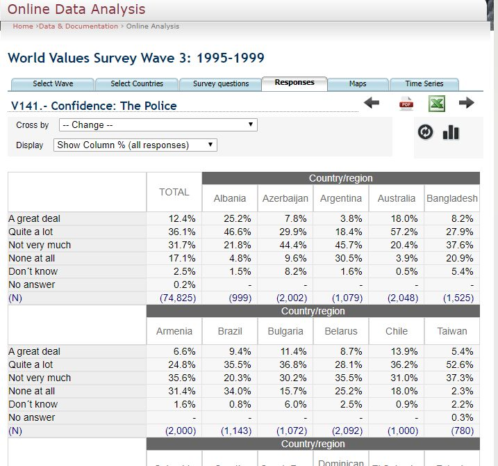
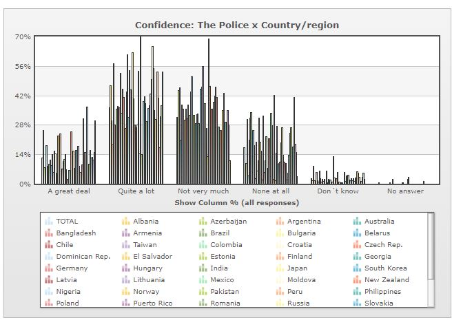
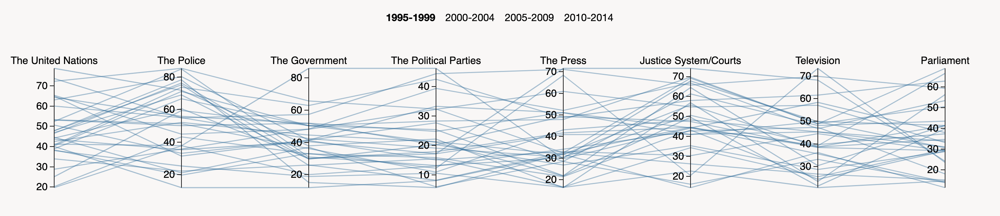
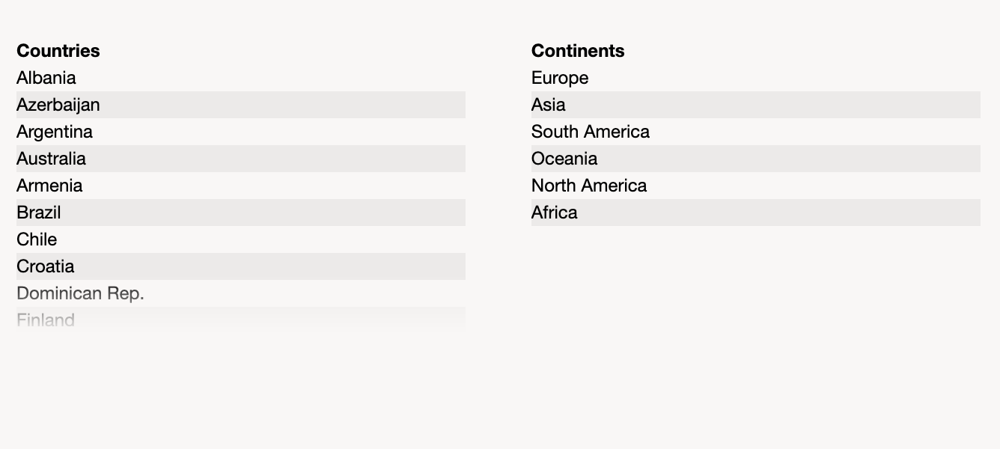

I want to know if a correlation exists between trusting the police and trusting the justice system. By choosing the period 1995-1998 and selecting all available countries we then proceed to chose the survey "Confidence : The police".
The image above shows the confidence that people from different countries have in the police.
WWS provides an option to visualize the data as a graph, see the image above. The same process can be applied for the survey "Confidence: Justice System/Courts". However, no tools exist to visualize the results from both surveys at once.
This time I used the created visualization tool to explore the relationships in the data from the different surveys.
With D3 parcoords it's possible to visualize multiple variables at once. One axis for each confidence survey. This way it comes easy to see the correaltion between survey data.
It's also possible to contextualize the countries in their geographical locations by selecting which continents you want to show data for.